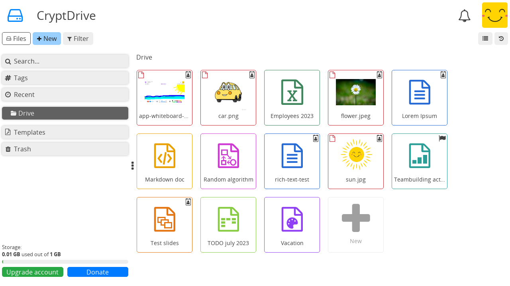

CryptDrive#
CryptDriveはドキュメントを保存したり管理したりするために使用されます。ログイン済のユーザーには、CryptPadの既定のランディングページとなります。他のページからアクセスすることもできます。
左上のロゴを
クリック。ユーザーメニュー（右上のアバター）> CryptDrive。
表示#
ドライブのドキュメントは リストまたは グリッドで表示できます。表示を切り替える際は、ドライブのツールバーの右（アバターの下）にあるボタンを使ってください。
グリッドモードでは、ドキュメントのサムネイルを表示するよう設定できます。これはユーザー設定で有効にできます。

CryptDriveのグリッド表示。#

CryptDriveの一覧表示。#
ドキュメントの管理#
フォルダー#
ログイン済ユーザー
ドライブでフォルダーを作成するには複数の方法があります。
ツールバーの 新規 > フォルダー。
右クリック> 新しいフォルダー。Ctrl + e > フォルダー。
フォルダーを作成すると、ドライブからドキュメントをドラッグしてフォルダーに追加することができます。フォルダーを別のフォルダーにドラッグアンドドロップすることもできます。また、左にあるサイドバーのツリーで、好きな場所にファイルをドロップできます。
フォルダーの色を変更するには、
フォルダーを
右クリック> 色を変更。
フォルダーとその全ての内容を共有するには、
フォルダーを
右クリック> 共有。フォルダーは共有フォルダーに変換されます。
名前の変更#
CryptPadでドキュメントの名前を変更するには2つの方法があります。1つは全てのユーザーに対してドキュメントのタイトルを変更すること、もう1つはあなたのドライブでのみ変更することです。
ファイルをドライブで所有している全てのユーザーに関してドキュメントのタイトルを変更するには、
タイトル、または、ドキュメントのツールバーの ボタンを
クリック。新しいタイトルを入力。
ボタン、または Enter キーで保存。
あなたのドライブでのみドキュメントのタイトルを変更するには、
あなたのドライブのドキュメントを
右クリック> 名前を変更。新しい名前を入力。
Enter キーで保存。
のアイコンは、ドキュメントのタイトルがあなたのドライブと他のユーザーのドライブとの間で異なっていることを示しています。
削除#
CryptPadでドキュメントを削除するには2つの方法があります。
ドキュメントを削除すると、ドキュメントはドライブには表示されなくなりますが、データベースには残っています。ドキュメントは、それを保存した他のユーザーのドライブには残ります。ドキュメントは履歴を使えば復元することができます。
ドキュメントを破棄（完全に削除）すると、ドキュメントはデータベースから完全に削除されます。ドキュメントは、それを保存した全てのドライブから削除され、ドライブの履歴から復元することはできません。 ドキュメントの所有者
注釈
ドキュメントがどのドライブにも保存されていない場合、ドキュメントは90日後にデータベースから完全に削除されます（この長さはサービスの管理者が設定できます）。
ドキュメントをCryptDriveから削除するには、
ドキュメントをドライブから ごみ箱にドラッグ。
右クリック> ごみ箱に移動ドキュメントを選択し、 Del キーを押す。
ごみ箱に移動せずにドキュメントをCryptDriveから削除するには、
ドキュメントを選択して Shift + Del のキーを押す。
ごみ箱を空にするには、
ドライブの左にある ごみ箱 のタブを
右クリック> ごみ箱を空にする。ごみ箱タブを
クリックしてごみ箱を開く > ごみ箱を空にする。
ごみ箱を空にする際、あなたがごみ箱のドキュメントの所有者である場合、それらのドキュメントを削除するか破棄（完全に削除）するかを選択するよう求められます。
ドキュメントをごみ箱に移さずそのまま完全に削除するには、
ドライブのドキュメントを
右クリック> 完全に削除。 ドキュメントの所有者
注釈
完全に削除した場合でも、ドキュメントは他のユーザーのドライブに現れる可能性があります。ドキュメントが第三者のドライブにいったん追加されると、CryptPadの暗号化の性質上、それを取り戻すことは不可能です。ドキュメントを以前保存したユーザーのドライブに、完全に削除されたドキュメントが現れる可能性があるのはそのためです。ただしその場合でも、第三者がそのドキュメントを開くことは不可能です。
履歴#
ドライブの履歴は保存され、必要な際に復元できます。ドライブから復元するには、
右上（アバターの下）にある 履歴ボタンを
クリック。矢印 と で履歴を確認できます。
表示されているバージョンを 復元で復元するか、 閉じるで復元せず履歴の確認を終了できます。
ストレージ容量を節約したい場合は、ユーザー設定でCryptDriveの履歴を削除することができます。
注釈
共有フォルダーには、CryptDriveの履歴とは別に、固有の履歴が設定されます。ドライブの履歴を復元しても共有フォルダーの履歴に対する影響はなく、逆にまた、共有フォルダーの履歴を復元してもドライブの履歴に対する影響はありません。
タグ#
ログイン済ユーザー
タグを使えば、ドキュメントを複数のカテゴリーにまとめることができます。設定したタグは他のユーザーには表示されません。
ドライブの タグのタブでは、使用中の全てのタグと、タグ付けされたドキュメントが表示されます。

ドキュメントでタグを追加・削除するには、
ドライブからは、ドキュメントを
右クリック> タグ。ドキュメントからは、 ファイル > タグ。
複数のドキュメントのタグを管理するには、
CryptDriveで Ctrl +
クリックしてドキュメントを選択。ドキュメントで
右クリック> タグ。
その後、全てのドキュメントに付けられているタグだけが表示されます。タグを追加、削除すると、選択した全てのドキュメントに適用されます。
テンプレート#
ログイン済ユーザー
テンプレートは、請求書やレターヘッド、報告書など、基本的な構造を共有している文書を作成する際のひな型として利用することができます。
テンプレートを作成するには、
ドライブの テンプレートタブを選択。
ツールバーの 新規。
または
既存のドキュメントで、 ファイル > テンプレートとして保存。
または
新しいドキュメントを作成。
作成画面で 新しいテンプレートを選択。
テンプレートを使用するには、
新しいドキュメントを作成する際にテンプレートを選択。
既存のドキュメントで、 ファイル > テンプレートをインポート。注意：このオプションはドキュメントの内容をテンプレートで置き換えます。
Storage quota#
When reaching the storage limit, you can still edit existing documents but you cannot create new ones.
To reclaim storage space you can clear:
The drive history
Documents history, from their properties
If necessary, an administrator can easily raise the storage limit of a specific account.
注釈
Some CryptPad instances offer paid plans with more storage space.